A spectrum is a curve: how much light a sample absorbs at each wavelength. Today we treat that curve as what it really is — a vector of numbers — and everything from the linear-algebra block suddenly applies to real chemistry.
What a spectrum is, and why “intensity vs wavelength” is just a high-dimensional vector.
The Beer–Lambert law: absorbance is proportional to concentration — the reason linear models are the natural language of spectroscopy.
Why raw spectra are messy, and the standard preprocessing toolkit: baseline correction, smoothing, normalization, derivatives.
Multivariate calibration: predicting a concentration from a whole spectrum, and why ordinary regression breaks — leading to PLS.
This is an Applications unit: it reuses dot products, linear models, and principal component analysis on data biologists and chemists actually collect.
A biology picture first
You have a bioreactor of cells and you want to know the glucose concentration in the medium — continuously, without pipetting out samples and running an assay every hour.
Shine near-infrared (NIR) light through the medium and record how much is absorbed at each wavelength.
Glucose, lactate, protein, water each absorb light in their own characteristic pattern.
The measured spectrum is a mixture of all of these, weighted by how much of each is present.
The task: read the concentration off the spectrum. Cheap, fast, non-destructive, and it works on living cultures, food, tissue, blood, soil.
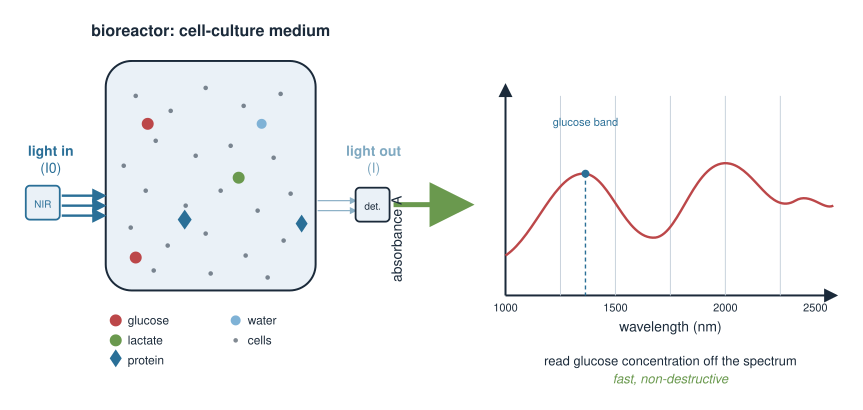
What is a spectrum?
Pass light of many wavelengths through a sample and, for each wavelength \(\lambda\), measure how much is absorbed.
Transmittance\(T = I / I_0\): fraction of light that gets through.
Absorbance\(A = -\log_{10}(T) = \log_{10}(I_0 / I)\): the quantity chemists model, because it behaves linearly (next slides).
A spectrum is the function \(A(\lambda)\) — absorbance at each wavelength.
Technique
Probes
Typical use
UV–Vis
electronic transitions
DNA/protein quantification
IR / NIR
molecular vibrations
composition, moisture, sugars
Raman
vibrational (scattering)
aqueous samples, live cells
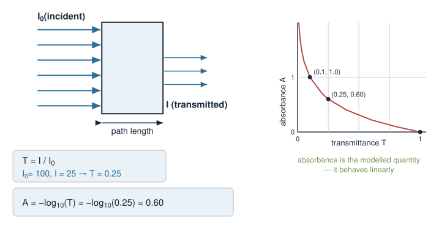
A spectrum is a vector
The instrument does not record a smooth curve — it records absorbance at a discrete grid of wavelengths \(\lambda_1, \lambda_2, \dots, \lambda_p\).
Rows = samples, columns = wavelengths. Same layout as an expression matrix (samples × features).
Usually wide: far more wavelengths than samples, \(p \gg n\).
# X: 50 samples (rows) measured at 700 wavelengths (columns)dim(X) # 50 700X[1, ] # the first spectrum, as a length-700 vectormatplot(t(X), type ="l") # overlay all spectra: wavelength on x, absorbance on y
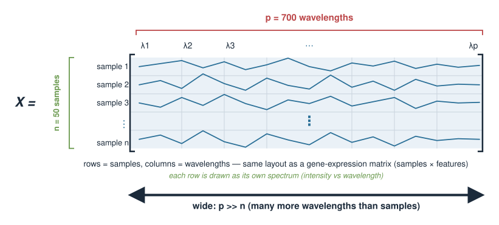
Beer–Lambert law
For a single absorbing substance, absorbance is proportional to concentration:
\[A = \varepsilon\, \ell\, c\]
\(c\) — concentration of the substance,
\(\ell\) — path length the light travels through the sample,
\(\varepsilon\) — molar absorptivity, a constant of the substance at that wavelength.
Double the concentration → double the absorbance. This is the linear relationship at the heart of quantitative spectroscopy.
At a fixed path length, at one wavelength, \(A\) is just a straight line through the origin in \(c\): \(A = (\varepsilon\ell)\,c\).
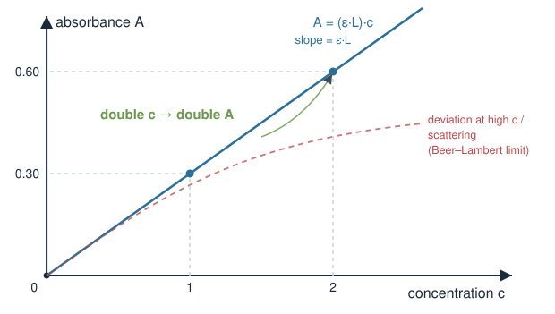
Mixtures add up
Real samples contain many absorbing species. At each wavelength, their absorbances simply add:
A measured spectrum is a linear combination of pure-component spectra, weighted by concentrations.
This is exactly a linear model — the same object as in Linear models, now with spectra as the vectors.
Recovering the \(c_i\) from \(\mathbf{x}\) is the calibration problem.
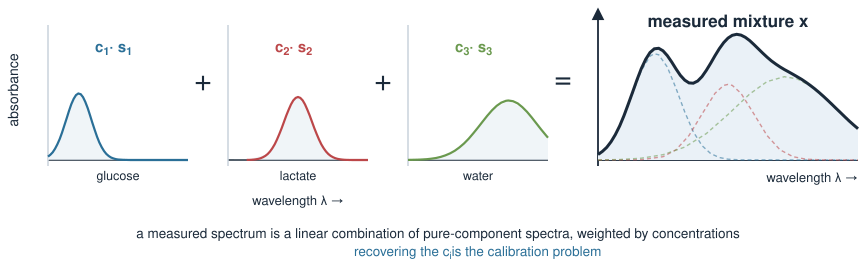
Why raw spectra can’t be used directly
Beer–Lambert is clean; real instruments and samples are not. Raw spectra carry artefacts unrelated to chemistry:
Baseline drift / offset — the whole curve floats up or down (light scattering, instrument warm-up).
Multiplicative scaling — path length and particle size scale the whole spectrum up or down.
Random noise — detector noise wiggles on top of the signal.
Overlapping peaks — chemically distinct bands blur into one broad hump.
If we feed these straight into a model, it will happily fit the artefacts instead of the chemistry.
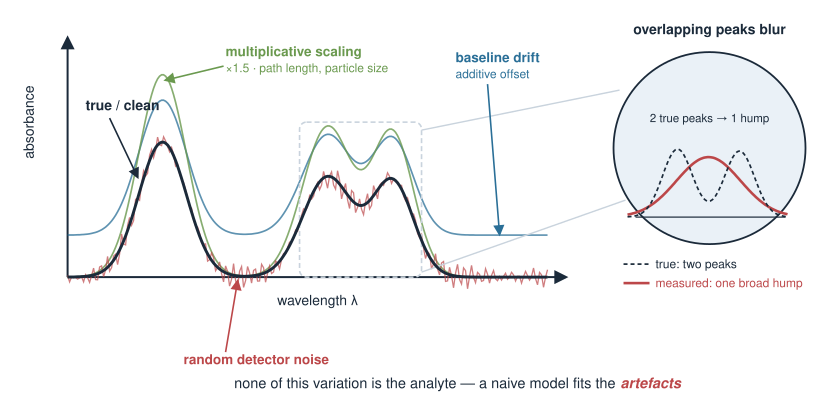
Preprocessing 1 — baseline correction
An additive baseline shifts the whole spectrum: \(A_\text{measured}(\lambda) = A_\text{true}(\lambda) + b(\lambda)\).
Simplest case: a constant offset\(b\) — subtract the minimum, or the value at a signal-free wavelength.
General case: a slowly varying curved baseline — fit a smooth curve (polynomial, asymmetric least squares) and subtract it.
# constant-offset removal: subtract each spectrum's own minimumX_bc <- X -apply(X, 1, min) # per-row (per-sample) baseline# a signal-free anchor wavelength (say column 1) set to zeroX_bc <- X - X[, 1]
Goal: two samples with the same chemistry but different baselines should end up on top of each other.
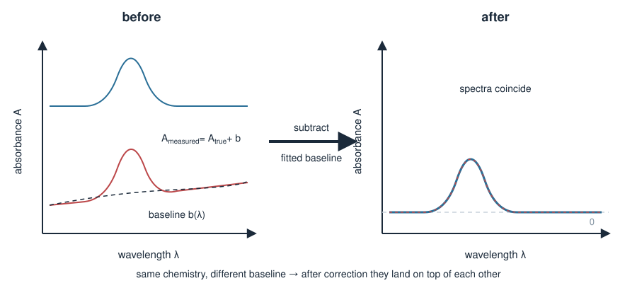
Preprocessing 2 — smoothing
High-frequency noise rides on top of the real, smooth bands. Averaging neighbouring wavelengths suppresses it.
Moving average: replace each point with the mean of a small window — simple, but blunts peaks.
Savitzky–Golay: fit a low-order polynomial in a sliding window and take its value at the centre — smooths while preserving peak shape. The standard choice.
Trade-off: too little smoothing leaves noise; too much erases real narrow peaks. Choose the window deliberately.
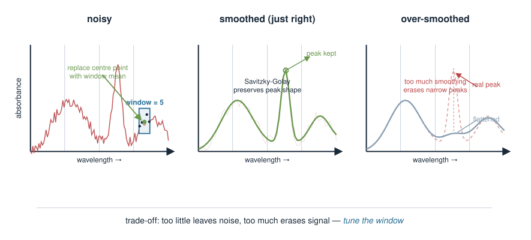
Preprocessing 3 — normalization
Multiplicative effects (path length, particle size, sample density) scale the whole spectrum by an unknown factor. Normalization removes that scale.
Vector normalization: divide each spectrum by its own length \(\lVert\mathbf{x}\rVert\) → all spectra have length 1.
Standard Normal Variate (SNV): per spectrum, subtract its mean and divide by its standard deviation (centre + scale each row).
# vector (L2) normalization: each spectrum scaled to unit lengthX_vn <- X /sqrt(rowSums(X^2))# SNV: centre and scale each spectrum (row) on its own statisticsX_snv <-t(scale(t(X))) # scale() works on columns, so transpose in/out
Now differences between spectra reflect shape (composition), not overall intensity.
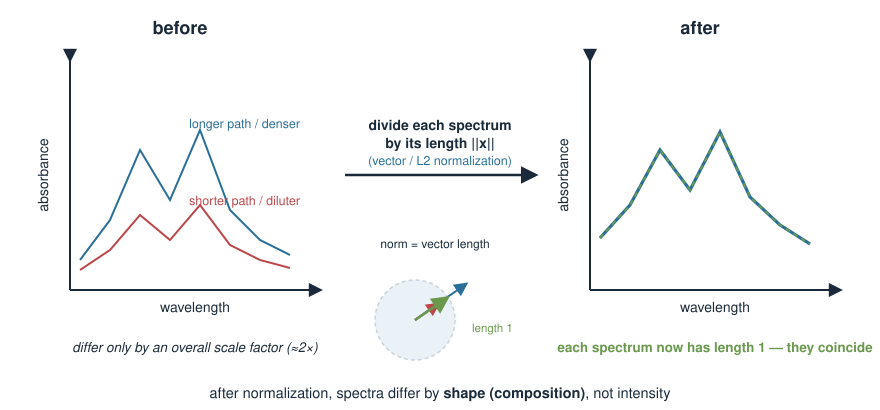
Preprocessing 4 — derivatives
Taking the derivative of the spectrum with respect to wavelength is a preprocessing step in its own right.
First derivative removes a constant baseline offset (the derivative of a constant is zero).
Second derivative removes a linear (sloping) baseline, and sharpens overlapping peaks into resolvable dips.
In practice the derivative is computed and smoothed together, usually by Savitzky–Golay (fit a polynomial, differentiate it).
# crude first difference along wavelength: approximates the derivativeX_d1 <-t(apply(X, 1, diff)) # one column shorter than X
Cost: differentiation amplifies noise, which is why it is paired with smoothing.
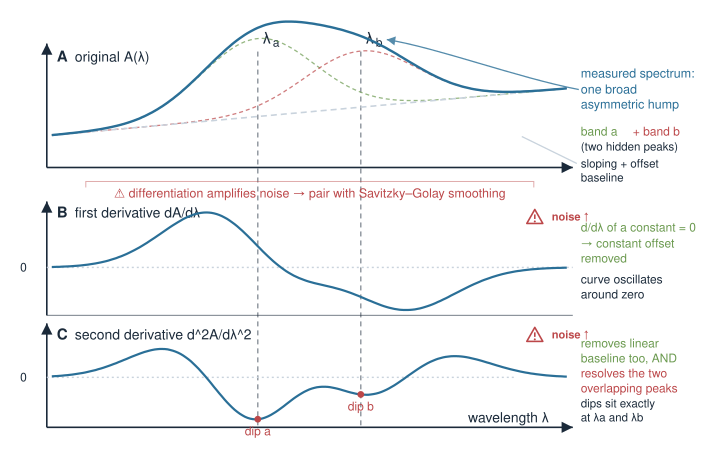
The calibration problem
We have \(n\)calibration samples with spectra (matrix \(X\), \(n \times p\)) and known reference concentrations (vector \(\mathbf{y}\), measured by a slow gold-standard assay).
Goal: learn a rule that turns a new spectrum into a predicted concentration — so future samples skip the slow assay.
A linear predictor (the natural choice, from Beer–Lambert) is a weighted sum of the absorbances:
The weights \(\mathbf{b} = (b_1,\dots,b_p)\) are a vector, one weight per wavelength.
Predicting is a single dot product between the coefficient vector and the spectrum.
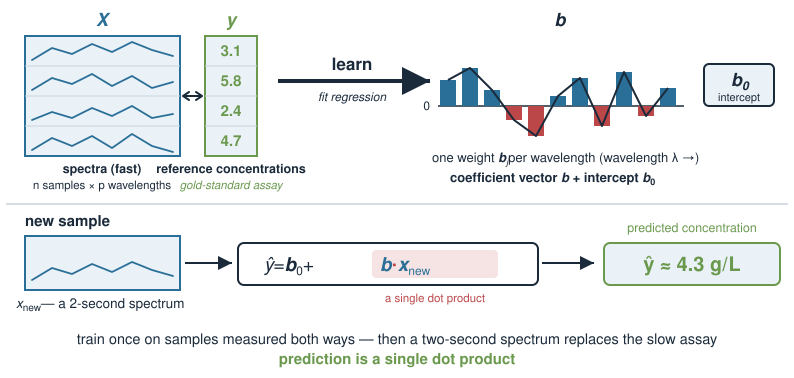
Why ordinary regression breaks
Ordinary least squares needs to invert \(X^\top X\) (a \(p\times p\) matrix). On spectra it fails on two counts:
\(p \gg n\): with more wavelengths than samples, \(X^\top X\) is singular — no unique solution. Infinitely many coefficient vectors fit the calibration data perfectly and predict garbage on new samples (overfitting).
Collinearity: adjacent wavelengths are almost identical (spectra are smooth), so columns of \(X\) are highly correlated — even when \(n > p\), \(X^\top X\) is near-singular and the coefficients are wildly unstable.
We need a method that works when predictors are many and correlated. The idea: compress the spectrum into a few good directions first.
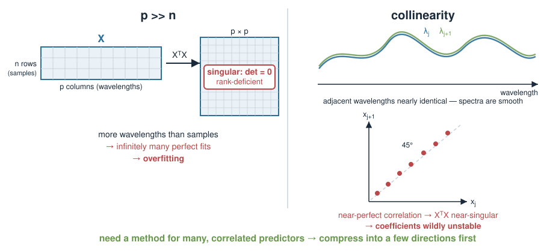
From spectra to a few components
Reduce the \(p\) correlated wavelengths to a few latent variables — weighted combinations of wavelengths — then regress on those.
Principal Component Regression (PCR): run principal component analysis on \(X\) (from the PCA unit), keep the top few components, regress \(\mathbf{y}\) on their scores. Components are chosen to capture variance in \(X\) — but the biggest variance might be nuisance, not analyte.
Partial Least Squares (PLS): choose components that capture variance in \(X\)and correlate with \(\mathbf{y}\). It uses the response while building the components.
PLS is the workhorse of chemometric calibration because it aims its components at the quantity you want to predict.
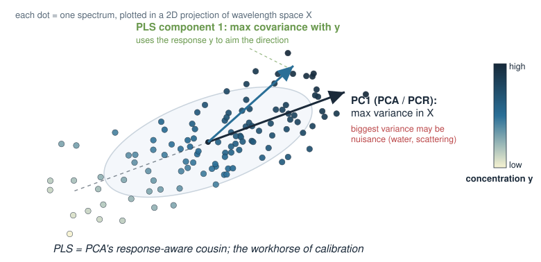
Partial Least Squares, in words
PLS builds a small number of latent variables (components), one at a time:
Find the direction in wavelength space \(\mathbf{w}_1\) along which the spectra vary and that variation tracks \(\mathbf{y}\) (maximal covariance with \(\mathbf{y}\)).
Project every spectrum onto it → a score\(t_1\) (one number per sample).
Use \(t_1\) to predict \(\mathbf{y}\); remove what it explained from both \(X\) and \(\mathbf{y}\).
Repeat on the remainder for \(\mathbf{w}_2, \mathbf{w}_3, \dots\)
Each component is a linear combination of wavelengths — a direction (a vector) in spectral space.
The number of components is the one dial to tune — chosen by cross-validation.
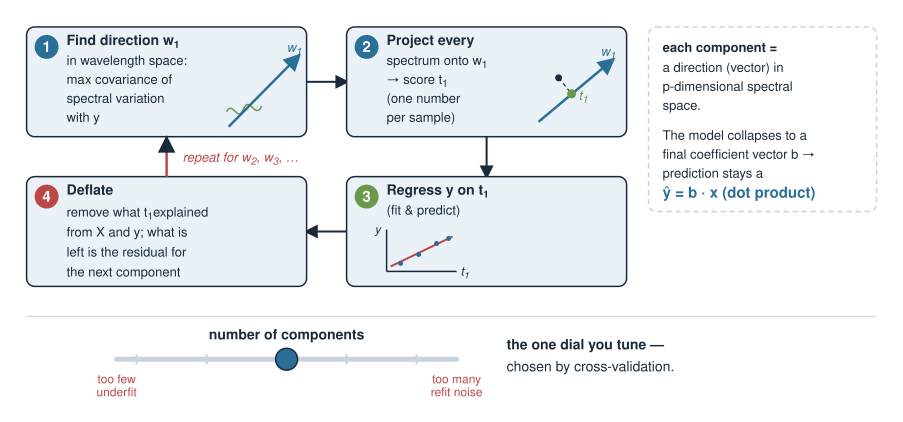
PLS in R
The pls package fits PLS with built-in cross-validation. Illustrative workflow (not run here):
library(pls)# df has a response column `conc` and a spectral matrix column `X`fit <-plsr(conc ~ X, data = df, ncomp =10, validation ="CV")# how many components? look for where CV error stops improvingvalidationplot(fit, val.type ="RMSEP")# predict a new spectrum using, say, 4 componentspredict(fit, newdata = new_df, ncomp =4)
validation = "CV" cross-validates over component counts.
RMSEP (root-mean-square error of prediction) tells you the expected error on new samples — pick the smallest sensible ncomp.
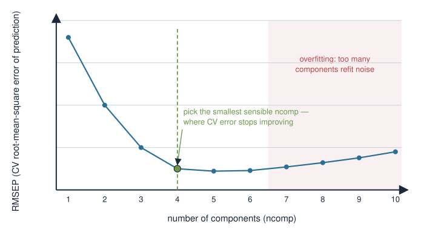
It was linear algebra all along
Chemometrics idea
Course concept
Spectrum = intensity vs wavelength
a vector in \(\mathbb{R}^p\)
Distance / similarity of spectra
norm, dot product, angle
Mixture spectrum
linear combination of pure spectra
Predict concentration
linear model, \(\hat y = b_0 + \mathbf{b}\cdot\mathbf{x}\)
Compress correlated wavelengths
principal component analysis
Supervised compression
PLS (PCA’s response-aware cousin)
Beer–Lambert makes the chemistry linear; the linear-algebra block is precisely the toolkit for linear things.
Summary
A spectrum is a high-dimensional vector: absorbance at each wavelength. A dataset is a wide matrix, samples × wavelengths, usually \(p \gg n\).
Beer–Lambert (\(A = \varepsilon\ell c\)) makes absorbance proportional to concentration, and mixture spectra are linear combinations of pure-component spectra — so linear models are the natural fit.
Raw spectra need preprocessing: baseline correction (additive), normalization (multiplicative), smoothing (noise), derivatives (baseline + overlap). These are validated, not guessed.
Multivariate calibration predicts concentration from a spectrum. Ordinary regression fails (\(p\gg n\), collinearity); PLS compresses wavelengths into a few response-aware components, tuned by cross-validation.
Next (Chemometrics II): classification of spectra, model validation, and interpreting which wavelengths drive a prediction.